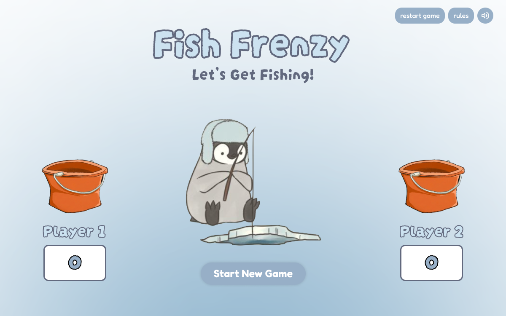
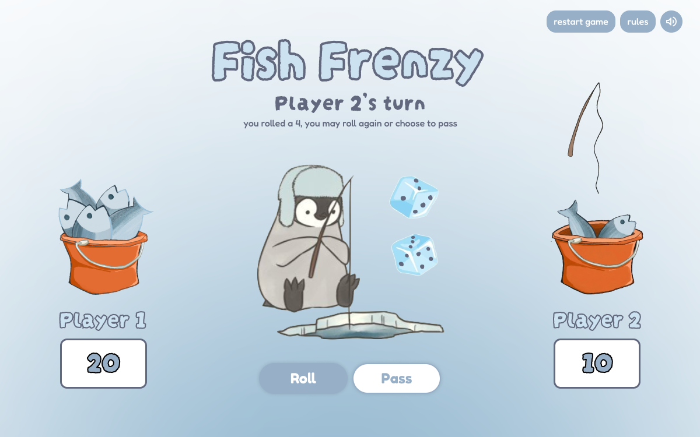
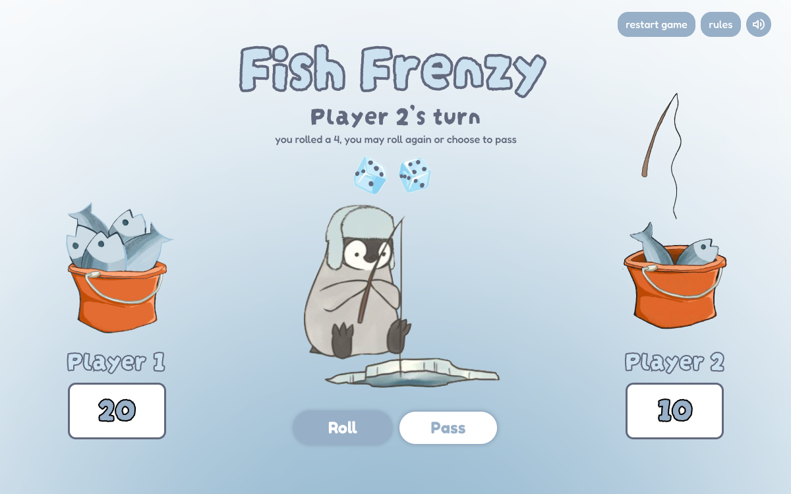
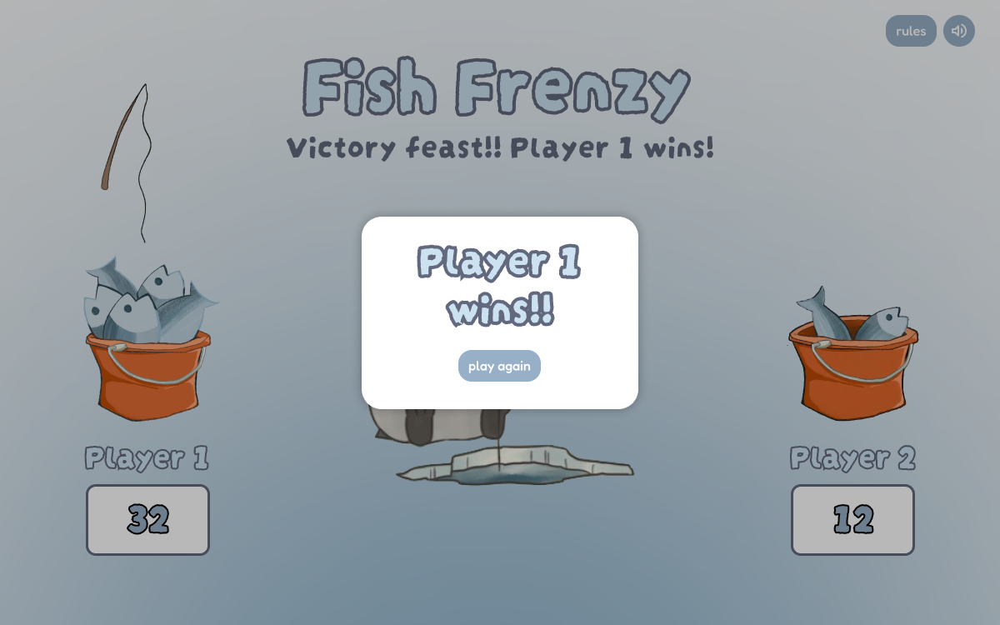

With my updated design compositions, I want to create a more immersive and "end-to-end" experience for players interacting with this game. In my previous iteration, the game felt a bit static, so my revision focuses on adding dynamic feedback and a stronger visual narrative. I’ve implemented a visual "step" system where the amount of fish in the bucket grows as points accumulate. To clarify the game’s state, I’ve also introduced a fishing pole asset that I plan to animate to visually signal whose turn it is, making it draw the attention of the user. Beyond the main gameplay loop, I’ve refined the visual hierarchy by experimenting with dice placement and adding slight drop shadows to the buttons to create better contrast against the background. I’m also planning to introduce a dedicated final win screen and a "play again" button to ensure the user journey doesn't just end abruptly, and so it is more rewarding for the winner. By improving and implementing these visual features, I’m aiming to create a more cohesive theme that feels like a polished, intentional piece of interactive design.